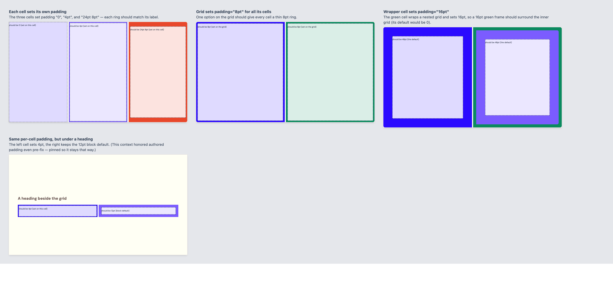
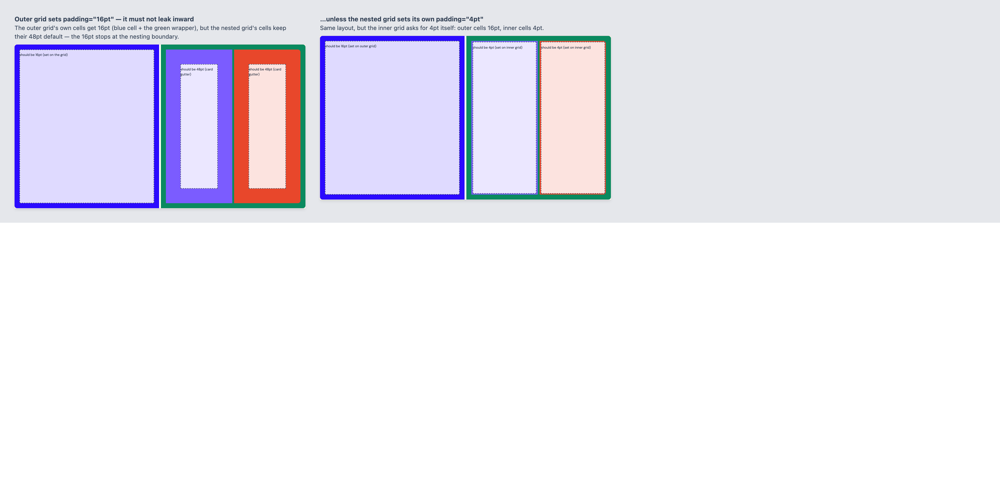

Role defaults — unchanged by the fix, as required

Storybook Components/Grid/Padding with the fix applied (role defaults become
var(--cell-padding, …) fallbacks + a --cell-padding: initial nesting
boundary on .gml-grid). Every ring now matches its label. Baseline (pre-fix) shots:
2026-07-07-pre-fix.
— unchanged by the fix, as required
— authored padding now wins on card / structural cells
— grid-level 16pt applies to its own cells, stops at the nested grid
— unchanged; default still tracks the theme knob